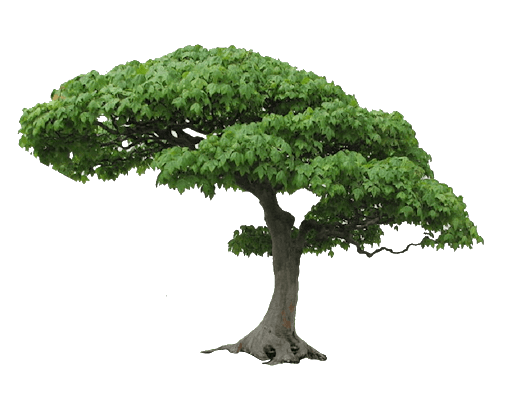
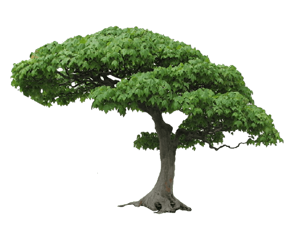

I'am nikhil
nature lover

nature lover
“Iam still graduating my Engineering. I chose that field of webdev because I’ve always been interested in designing and creating webpages, and a couple of family members told me it leads to great career options. One of my key accomplishments during my academic career was speaking at a conference on the topic of web creation, based on research I had done for one of my senior-level classes. This led to an internship that I just wrapped up, so I’m actively looking for a full-time position now.”

I enjoy the challange of writing Python code for my science projects. Playing with different methods of data visualization to best emphasize all of its aspects. I also enjoy making beautiful, minimal websites with HTML, CSS and JavaScript.

I really enjoy singing. i do listen songs frequently,like telugu,hindi,english songs.Singing can make me feel good in everywhere and anytime. Singing always give me new spirit to live. So many thing make me like singing. First, I have a good vocal. But that my parents and my friends same think and I think so. Beside that, singing always make me happy and feels better.
I can also design and maintain a beautiful website for you.
If you like my style and have a project in mind, do get in touch.